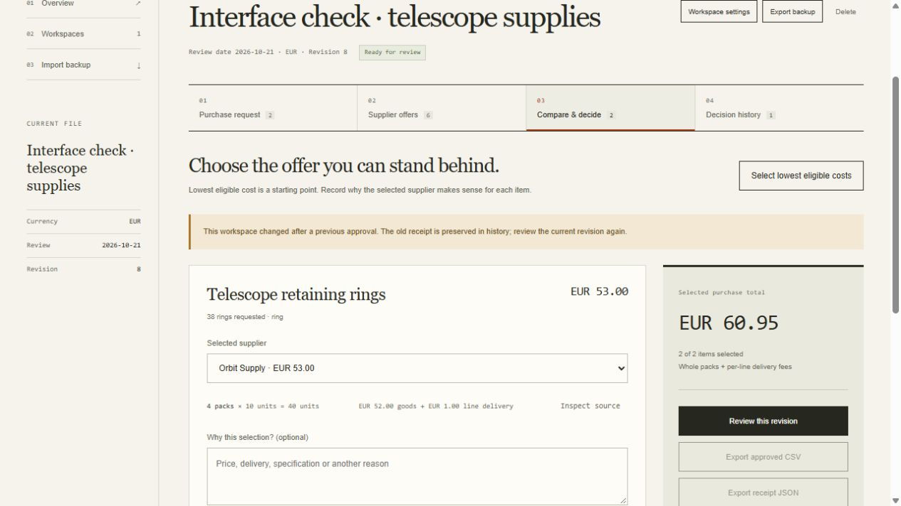

Start with one decision
A complete synthetic review is available to inspect, from six original offer rows to the exported receipt.
- The input: 37 retaining rings (
ring) and 11 seals (seal), EUR, review date 21 October 2026 and a seven-day lead limit. Download the original CSV. - The decision: Orbit Supply costs EUR 53.00; Documented Seals costs EUR 7.95. The reviewed total is EUR 60.95. Inspect the revision 7 receipt.
- The important edge: increasing rings from 37 to 38 still buys four packs. The total stays EUR 60.95, but the input changed: revision 8 needs a new review. The old receipt remains in history.

Try with your own request ↗Recorded review checks ↗Independent calculation comparison ↗
The problem behind the table
The lowest displayed unit price can produce a more expensive purchase when pack sizes differ. A minimum order or delivery fee can change the result. An expired, unavailable or duplicated quote can look attractive until someone reads the original row.
Then the decision changes, while an old “approved” state remains easy to mistake for the current review. QuoteLens keeps those questions together: what must be purchased, which facts are known, where did they come from, and which version was reviewed?
A real input boundary
The earlier Python prototype used a fixed four-item synthetic request. Users create their own comparisons with an empty request, then add arbitrary items, manual offers or mapped supplier CSV columns. The optional first-visit preview is a tour, not the boundary of the engine.
Every imported offer retains its original decoded fields, including unmapped columns, plus the file name and physical starting row. Manual offers retain the entered fields. A malformed import is rejected as a whole, so a partial comparison cannot hide silently skipped rows.
This makes the source inspectable. It does not prove a supplier's identity, validate the item's technical specification or authenticate a quoted term.
Compare what the buyer actually buys
Packs to buy = max(round up required quantity ÷ pack size, minimum packs)
Line total = packs × pack price + delivery fee for that line
The engine uses BigInt minor-unit arithmetic for exact monetary calculations. Inputs use decimal strings with at most two decimal places; malformed, grouped, negative or over-precision values are rejected. It does not perform floating-point money arithmetic or infer exchange rates.
A fee belongs to an offer line. Shared supplier-order freight, taxes and cross-currency conversion are excluded. The app presents one currency per workspace and displays two decimal places, including VND. Those choices are explicit scope, rather than invisible estimates.
Unknown is a visible state
Known insufficient stock, expired validity, currency mismatch, duplicate quote identity and failed lead-time constraints block an offer. Missing stock, lead time and validity remain warnings; unknown lead time blocks an item that has a maximum lead-time requirement.
Both exact and conflicting duplicate supplier/quote/item identities block the involved rows. The reviewer must resolve them. Eligible offers can still have unverified facts that deserve attention before approval.
The lowest eligible total is a starting point for a decision. Reviewers can select another eligible offer and explain why. An incomplete selection is a subtotal, not a fully approved purchase amount.
A receipt is a snapshot, not a signature
A local receipt captures selected lines, costs, source fields, reasons and a full input snapshot. A deterministic canonical content fingerprint ties that review to its inputs. Later edits require another review; earlier receipts remain historical.
The fingerprint is a content string. It is not a cryptographic hash, signature, authentication mechanism or tamper-proof guarantee. Backup validation checks structure and internal reconciliation; a consistently rewritten user file is still user-provided data.
Approval records a local review. It sends no purchase order, supplier message or payment, and it does not substitute for accountable organizational authorization.
A small architecture with clear responsibilities
| Layer | Responsibility |
|---|---|
| Calculation core | Pure validation, CSV handling, whole-pack arithmetic, eligibility, content fingerprints and immutable receipt snapshots. |
| Browser interface | Request and offer editing, column mapping, source inspection, explicit selections, review dialogs and exports. |
| IndexedDB store | Local workspace transactions and a visible saved/unsaved boundary. |
| Portable JSON | Validated workspace backup and restore, including historical receipts. |
Static hosting needs no app backend or API credentials. The application has no account, authentication, analytics SDK or cloud sync. Its quote data stays in browser storage unless the user exports it. That also means browser data can be cleared, and another device or origin has a different library.
Check the reasoning, then the implementation
A fixed corpus compares 15 synthetic cases and 33 offer rows with a separate rational-arithmetic reference and handwritten expected results. It covers pack rounding, minimum orders, delivery fees, eligibility, missing facts, duplicates and incomplete selections. The reference enumerates packs and adds exact decimal prices instead of using the production calculation path.
One countercase makes the trade-off concrete: a lower nominal unit price produces a EUR 10.00 purchase, while smaller packs cost EUR 8.00 under the same stated rules. Another checks review identity when either content or revision changes without a price change. These are reproducible input/output comparisons, not measured customer savings. Read the corpus, expected results and reproduction command.
The repository also runs 23 core and eight targeted UI regressions. Recorded browser checks cover the EUR 60.95 workflow above, saved reasons, source-row inspection, receipt export and reload. The current interface also has first-use comparison checks at desktop and phone sizes. Follow the decision through the current architecture.
Earlier verification history
An earlier two-item/eight-offer browser run produced USD 66.00 and checked quantity changes, note retention and historical receipts. Its desktop capture, mobile capture and receipt are retained as historical evidence. Current visual and workflow evidence is linked above.


What is deliberately outside the product
No in-app AI, OCR, PDF extraction, currency conversion, tax calculation, shared supplier-order freight, supplier integration, cloud sync, account, authentication, external messaging or order placement is included. “AI-assisted” describes how this project was developed; its comparison engine is deterministic.
There are no real-customer records or claims of customer adoption, procurement deployment or measured savings. The next useful study is to watch an unfamiliar reviewer use their own small request and supplier file: can they explain a price difference, find the blocked row and restore a backup without help?
Let the comparison explain the product
The current page starts with the task: compare supplier quotes for their full purchase cost. An interactive fictional bolt request shows why a lower unit price can lose after whole-pack rounding and delivery. Change 120 to 100 and the winning supplier reverses. This uses the same deterministic engine as saved comparisons; opening it preserves the displayed quantity and terms in a new editable workspace.
Inspected Ramp purchasing-record details and Cosmos Studio's Ply procurement design informed record hierarchy and quiet operational controls. Navy and blue, locally hosted Adobe Source Sans 3 and aligned purchase data distinguish QuoteLens from PourLab's game surface. On phones, both competing totals appear together, and the quantity field keeps focus as results update. No gallery artwork or code is copied.
The former Swiss/Georgia ledger and earlier glass/Three.js version are historical designs. Their screenshots and motion recordings do not describe the current interface. Current stage, selected-total and dialog feedback respects reduced-motion preference and never delays calculation or storage.
Current design decisions · Inspected sources and rights · Asset provenance and font license